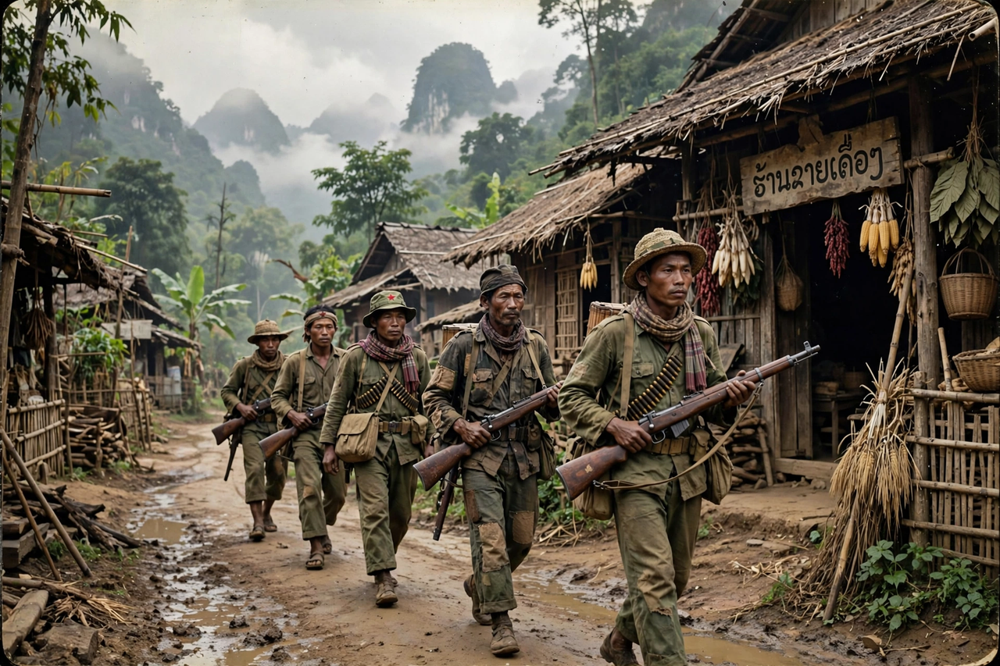

| Founded | 1950 |
|---|---|
| Leaders | Souphanouvong, Kaysone Phomvihane, Khamtai Siphandon |
| Ideology | Communism, Marxism–Leninism, Lao nationalism |
| Allied with | North Vietnam; the Viet Minh and Viet Cong |
| Outcome | Seized power in 1975; established the Lao People's Democratic Republic |

The Pathet Lao (Lao: "Land of the Lao") was a communist political movement and organisation in Laos, formed in 1950 during the First Indochina War. Allied with Vietnam's communist movement and supported by North Vietnam, it fought the Royal Lao Government through the Laotian Civil War (1959–1975) and took power in 1975, founding the Lao People's Democratic Republic, which its successor party still governs.
The movement grew out of the anti-colonial Lao Issara government and was formally established in 1950 under Prince Souphanouvong, the "Red Prince", with cadres trained and supplied by the Viet Minh. Its political party, the Lao People's Party (later the Lao People's Revolutionary Party), was organised in 1955 under Kaysone Phomvihane. At the 1954 Geneva Conference, Laos was declared neutral and the Pathet Lao regrouped in the two northern provinces of Phongsaly and Houaphan, where it built its base areas around Sam Neua and the cave complexes of Viengxay.
Two attempts at coalition government with the royal government in Vientiane (1957 and 1962) collapsed amid Cold War polarisation. During the Vietnam War, eastern Laos carried the Ho Chi Minh trail, North Vietnam's supply route to the south; the United States bombed Laos massively and ran a "secret war" supporting the Royal Lao Army and Hmong irregulars under Vang Pao. The Pathet Lao, backed by North Vietnamese regulars, steadily gained ground, and after the 1973 ceasefire moved into a coalition that it dominated.
Following the communist victories in Vietnam and Cambodia in the spring of 1975, the Pathet Lao took control of Vientiane without a major battle. On 2 December 1975 the monarchy was abolished and the Lao People's Democratic Republic proclaimed, with Souphanouvong as president and Kaysone as prime minister. Tens of thousands of former officials were sent to re-education camps, and a large exodus — especially of Hmong — followed.